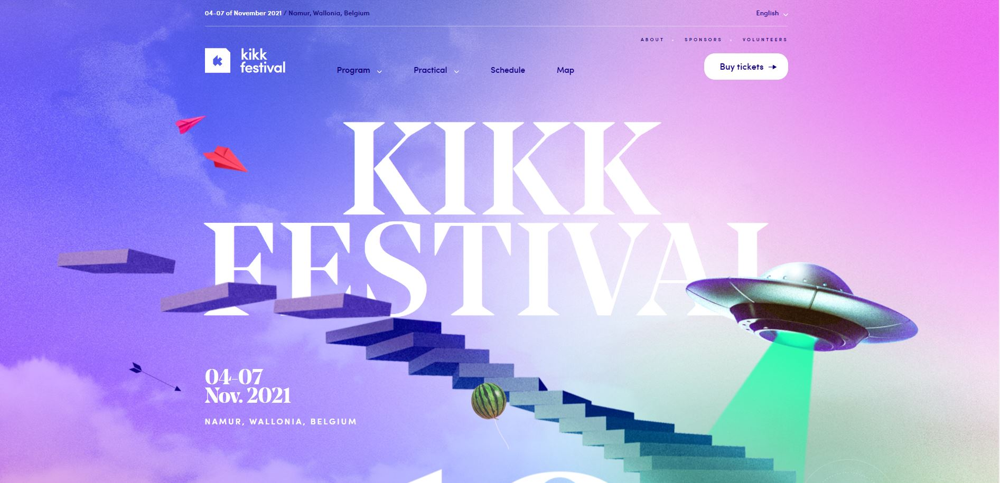

Review 03
kikk.be
KIKK is a festival website that occured in november 2021. As you scroll down on the main page, there is an illustration of downstairs an they use that as a way to guide the users' attention.They added information on checkpoints on the stairs. They also included images that you can click on to obtain more details. When you click onto another section, there is a transition animation. The website is pretty colorful and has a lot of breathing space. Unlike the two other websites, the menu on this one contains vertical scrolldown, where the user can find more sub-sections.